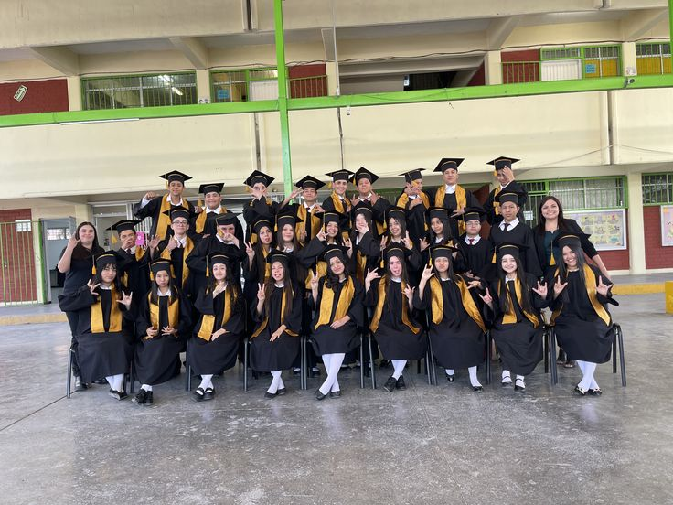

Promoción 2026
Nuestra invitación
«Un camino lleno de aprendizajes, recuerdos y sueños que hoy nos reúne para celebrar un nuevo comienzo.»
Después de años de aprendizaje, esfuerzo y momentos que quedarán para siempre, llega el momento de celebrar una nueva etapa.
Con mucha alegría, la Promoción 2026 de la Unidad Educativa San Luis invita a familiares y amigos a ser parte de este momento tan especial.
El gran día se acerca
¡Hoy es el gran día!
Información del evento
- Institución
- Unidad Educativa San Luis
- Evento
- Ceremonia de graduación
- Promoción
- 2026
- Fecha
- Hora
¿Dónde nos encontramos?
Consulta la ubicación del evento en el siguiente enlace para acompañarnos en este día tan importante.
Ver ubicaciónPrograma de actividades
Cronograma provisional
-
10:00–10:15
Recepción y bienvenida
-
10:15–10:25
Entrada de la Promoción 2026
-
10:25–10:35
Apertura y palabras de bienvenida
-
10:35–10:50
Palabras de las autoridades de la institución
-
10:50–11:20
Entrega de diplomas y reconocimientos
-
11:20–11:35
Palabras de despedida y agradecimiento
-
11:35–11:45
Fotografías oficiales de la promoción
-
11:45
Cierre de la ceremonia
Galería de recuerdos
Promoción 2026
Confirmación de asistencia
«Nos encantaría contar con tu presencia en este momento tan especial.»
Confirma tu asistencia por WhatsApp; el mensaje se abrirá listo para que puedas revisarlo y enviarlo.
Confirmar asistencia